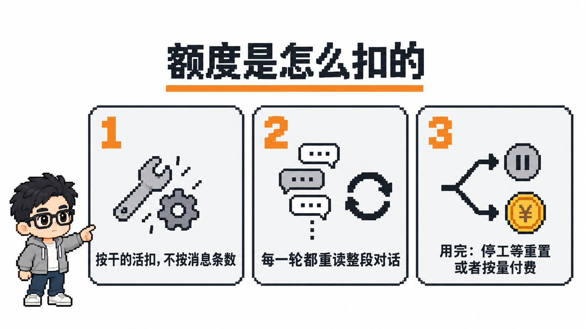
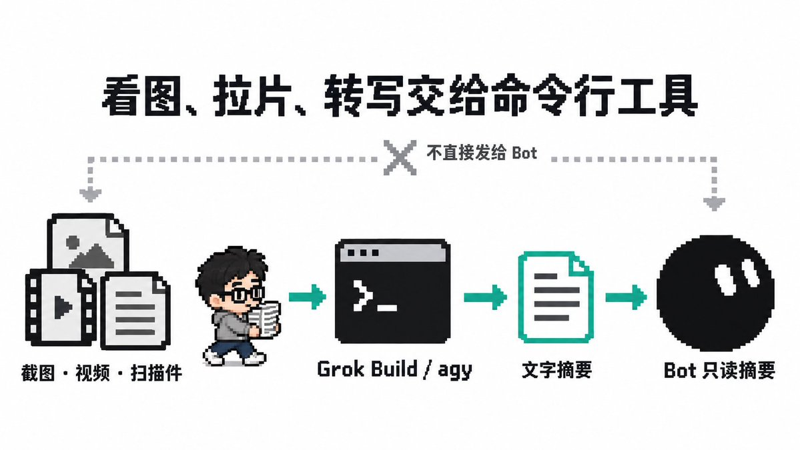
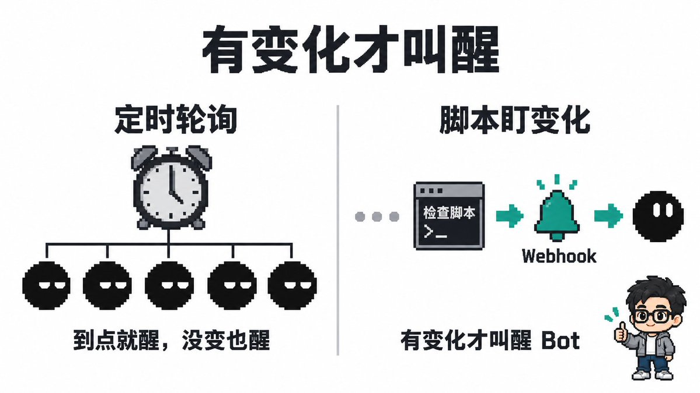
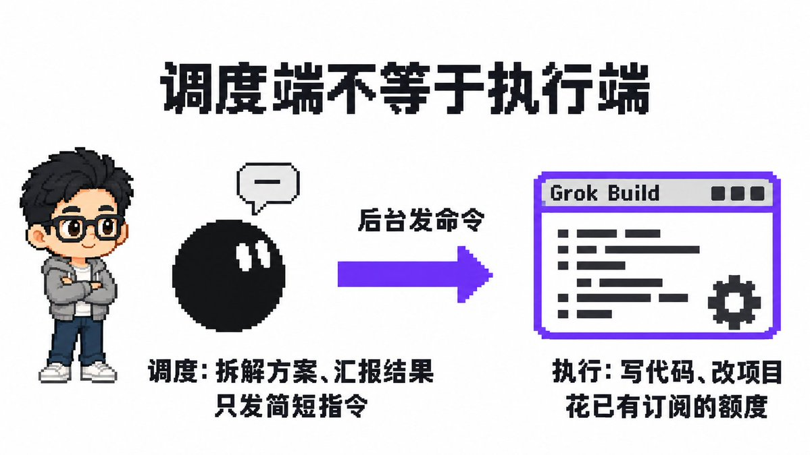
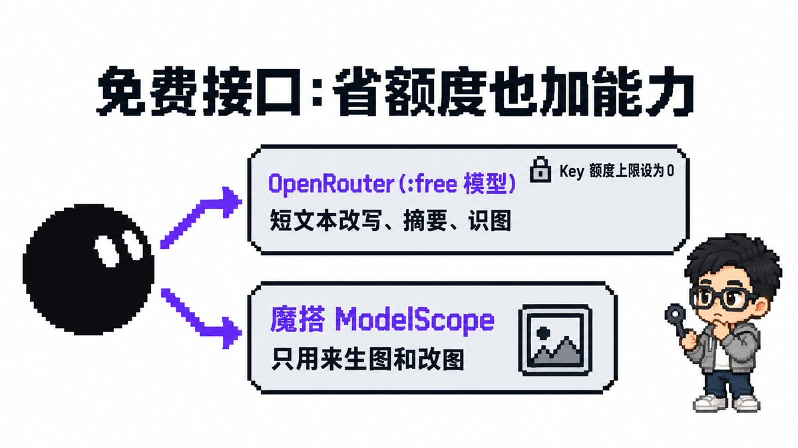
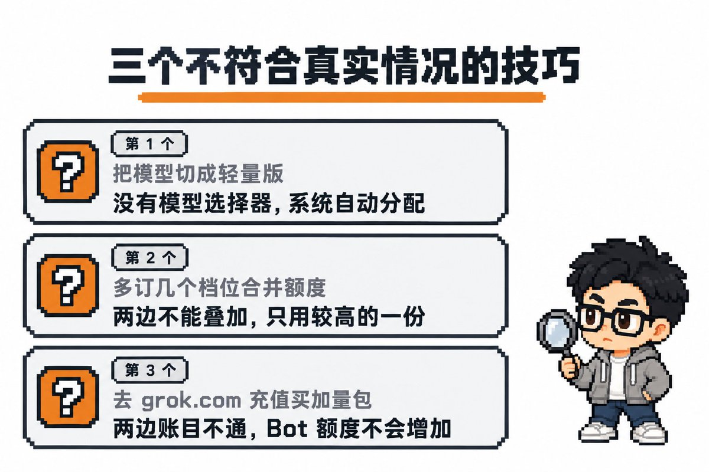

西堂 picks · 14/24
Grok Bot 额度超长续航保姆级新手指南（直接发给 Bot！）
@cgnot996 · 铁柱AGI · Fri Oct 09 10:26:19 +0000 2026
这周我做一支音乐视频，我把音频交给 Grok Bot (xAI's AI assistant that comes with its own computer)，让它调用我电脑上的 Claude Opus 5.5 来做视频。
Embedded post: x.com/i/status/2108157846005350754
做这支片子时要看大量图片和视频画面。
一些帖子这几天也说，自己的额度 (quota (how much use your plan allows))两三天就见底了，眼巴巴等着每周重置。
这篇我把摸索出来的 12 招整理出来，每招配一句直接复制给 Bot 的话，说明省在哪、入门档能不能用。
在把指令发给 Bot 之前，你有没有想过，为什么发的消息不多，额度却悄悄见底了？
先弄明白额度是怎么扣的
官方没有公布每个档位具体包含多少额度，底层规则主要有三点。

第一，额度按 Bot 实际干的活扣，不按消息条数算。
模型调用成本、字符体积加上工具调用，全部计入消耗。
第二，每个 Bot 只有一条对话，每一轮都会把整段对话重新读一遍。
有位 Cursor 员工查某一个团队账号时说，他们最忙的几个 Bot 每一步要重读 8 万到 9 万 token。
第三，用完之后，要么停工等下周重置，要么按量付费。开启按量付费后扣款速度非常快。
摸清机制后，省额度的思路很直接，把最费的操作转出去，减少无效输出，把重活分给手上的工具。
最费的先砍
第 1 招：看图、拉片、转写交给命令行工具
多模态输入是消耗大户。把截图、视频帧或扫描件直接发进对话，上下文会迅速变大。
有位用户测过，一天发 4 张图，做一次搜索并处理两份扫描文档，就耗掉顶档周额度的 11%。
正确的做法是在云电脑里调用 Grok Build 或 agy 等命令行工具读取文件出文字摘要，Bot 只读摘要。

没有命令行环境，也可以先在网页版 grok.com 或免费 Gemini 网页版出摘要，再贴给 Bot。
直接复制给 Bot 的话：
「以后遇到查看截图、分析视频画面、逐帧拉片、音频转写或识别长文档扫描件的任务，不要自己直接读取多模态文件。优先在云电脑里调用 Grok Build 去读取并输出文字摘要，你只阅读它生成的文字结论；如果当前无法调用命令行工具，请提醒我先在网页端获取文字摘要后再发给你。」
- 省在哪：避免让 Bot 直接读多模态文件。图片视频交给外部工具出摘要后，Bot 只读几百字文字。
- 入门档能不能用：部分能用。云电脑装好 Grok Build 并登录，花的是 CLI 自己的订阅额度；没装的先发网页版出文字摘要。
第 2 招：别让一条对话越滚越长
每个 Bot 只有一条对话。聊得越久，代码和日志越多，哪怕只改一个标点也要重读整段历史。
想控制对话长度，可以照着这四步来做。
第一，把长期规矩写进 Bot 描述，做熟的流程存成技能 (skill (a saved how-to the bot can reuse))，别在聊天里每天重复交代。
第二，长资料、日志和进度存成文件，Bot 只回结论和路径，不把大段原文贴进聊天。
第三，定时任务 (scheduled task (a job that runs at set times))和长期项目交给专门的 Bot，别放进天天聊的主 Bot。
第四，对话太长时让 Bot 写交接总结，在 iPhone 上复制这个 Bot（我在 iPhone 上试过，能复制；桌面端菜单已经没有这个选项），把总结发给副本，旧 Bot 隐藏别删。
这里的代价是，复制出来的副本不带旧对话、记忆 (memory (facts the bot keeps between chats))和附件，关键事实需要重新交代一次。
直接复制给 Bot 的话：
整理规矩与技能：
「把你需要一直遵守的规矩整理成一段，我贴进你的描述里；把我们刚才做熟的这套流程存成一个技能。」
长资料存文件：
「以后长资料、排查日志和中间结果都存成 /workspace/ 下的文件，回我时只给结论和文件路径，不要把原文贴回聊天。给自己建一个 notes.md 记录角色、正在做的事和做过的决定，每做完一段就更新。」
写交接总结：
「帮我写一段 10 行以内的交接总结：包括你的角色、正在做的事、做过的决定、下一步计划，以及需要读取的文件路径。我要把它交给你的副本。」
- 省在哪：主对话不被长资料撑大，每轮重读大幅减少；关键规则固化在描述和文件里，不会被冲淡。
- 入门档能不能用：整理规矩、存文件、分 Bot 都能用。复制 Bot 目前要在 iPhone 上操作，副本需重新交代事实。
第 3 招：定时放慢，没变化就闭嘴
例行任务如果不加管理，会悄悄耗尽额度。官方帮助中心提示过，短间隔任务可能一天用完一周额度。
有位用户自查发现一条高频任务每周触发 672 次，改成每小时一次后降到 168 次。
不用的例行任务点击暂停就不扣费；但在界面上点击测试运行（Test），每次都会扣额度。
直接复制给 Bot 的话：
「列出你所有的定时任务，告诉我每条多久运行一次、一周一共运行多少次、没变化时会不会也发消息。再告诉我哪条最费额度，帮我把间隔放慢；同时修改规则：执行检查后如果没有实质变动，保持静默，不要生成汇报。」
- 省在哪：减少无效唤醒次数。把没变动的汇报取消，省下每一次「没变化」的调用消耗。
- 入门档能不能用：完全能用。所有档位都能随时调整周期或暂停任务。
第 4 招：有变化才叫醒
这是第 3 招的进阶版。Bot 处于休眠时，云电脑底层的 Linux 定时任务仍在运行。
系统脚本检查网页或文件变动只需几秒，不经过模型，不消耗 Bot 额度。

我前几天改造过，营销总监 Bot 原有 6 条定时，挑出 2 条盯数据的改用脚本盯，有变动才通过 Webhook (a web address that triggers an action when called) 叫醒。
改造全程约 23 分钟，每周减少 8 到 10 次空转，时效性反而提升到了半小时以内。
直接复制给 Bot 的话：
「针对数据监控类的例行任务，不要在 Routine (a task the bot runs on a schedule or a trigger) 里设置固定时间的轮询唤醒。我们在云电脑后台配置轻量检查脚本，平时保持休眠；只有当脚本检测到目标数据发生实质变动时，才通过 Webhook 地址叫醒你进行跟进处理。」
- 省在哪：省去到点就醒、没变又睡的轮询。只有确实有活时，Bot 才醒来消耗额度。
- 入门档能不能用：能用。各档位云电脑都能运行基础脚本，配合 Webhook 触发即可。
让 Bot 少说废话
第 5 招：别开群聊，Bot 之间少说话
Bot 官方工程师公开说明过，群聊非常消耗 token，群越大越贵，建议普通用户尽量不用。
有位 Cursor 员工查某一个团队账号时说，每条消息都会让 Bot 重读历史，回复又叫醒对方。
在该账号里，约三分之一的轮次是 Bot 互相叫醒。入门档建议少建 Bot，有事找专门的 Bot 单聊。
直接复制给 Bot 的话：
「严格执行我直接下达的指令，不要主动唤醒其他 Bot 开展群聊协同或多方确认。如果任务需要多环节配合，由我来负责传递关键结论，或者直接将子任务交由对应的执行工具单独处理。」
- 省在哪：避开 Bot 之间互相问候和循环引用的开销，把额度留给实际任务。
- 入门档能不能用：完全能用。改用一对一沟通，没有任何限制。
第 6 招：先复用再新建
每建一个 Bot 都要输入提示词 (prompt (the instruction you give the AI))并测试工具调用。官方赠送的新人额度有限，大任务可能一次用完且不补发。
官方工程师建议「先复用再新建，没事别吵」。手头留两三个核心 Bot，有新需求优先在已有 Bot 上增补规则。
直接复制给 Bot 的话：
「在为新需求创建新 Bot 之前，先审查我们当前已有的工作流 (workflow (a chain of steps done in order))与工具配置。如果现有的 Bot 已经具备类似的基础能力，优先在原有配置中增补规则或扩展功能，避免创建独立的新 Bot。」
- 省在哪：省掉新建 Bot 时的调试、测试和初始化开销。
- 入门档能不能用：完全能用，全档位通用。
重活交给手上已有的订阅
第 7 招：额度分流，调度端不等于执行端
这是我 9 月在杭州分享的核心逻辑，Grok Bot 负责调度，重活剥离给已有订阅。
如果在聊天框里写几百行代码或通读仓库重构，额度会迅速用完。
在云电脑装好 Grok Build 并登录，Bot 在后台发命令让它写代码，自己只汇报结果。

有人测试过，把写代码交给 Grok Build 后，两天半 Bot 池用了 70%，外部开发池才用 6%。
还有用户让 Bot 只调度 Cursor 开发，连续工作 3 小时，周额度只用了 3%。
直接复制给 Bot 的话：
「你的定位是任务调度员，负责拆解方案、组织逻辑和调度工具。不要在对话窗口里直接编写冗长的代码或做大文件修改；涉及代码编写和项目重构的工作，统一在后台调用已经授权的 Grok Build 执行，你只向我同步最终执行结论。」
- 省在哪：把高消耗的代码编写转移到已有订阅的开发池，Bot 只发简短指令。
- 入门档能不能用：能用。在云电脑装好 Grok Build 并登录已有账号即可。
第 8 招：X 搜索用自带免费额度，搜回来只留要点
现在的 Grok Bot 搜索 X 平台用自带免费额度，限制为每分钟 30 次、每天 1000 次。
这套搜索不扣 Bot 周额度，也不扣 X API (a way for programs to talk to each other) 积分。
问题在于搜索结果回流，如果把大批推文贴进聊天，对话被撑大，后面每步都要重读买单。
让 Bot 把大批原始推文存进文件，对话里只回要点和链接；同时注意别超频次上限。
直接复制给 Bot 的话：
「在检索 X 平台的推文、观点或动态时，使用你自带的免费搜索能力。检索到的大批原始推文请直接保存到 /workspace/ 下的文件中，在对话中只向我汇报提炼后的核心要点与对应链接，不要把大段推文原文贴进聊天。」
- 省在哪：用自带免费额度搜索，将推文保存在外部文件，防止对话变长。
- 入门档能不能用：完全能用。所有档位原生自带该搜索额度。
免费接口：省额度也加能力
除了已有订阅，接入公开免费接口也能把轻量文本、识图和生图分流出去。

OpenRouter：轻量文本与免费识图
OpenRouter 上有一批 ID 以 :free 结尾的免费模型，适合短文本改写、摘要和免费识图。
官方限额为每分钟 20 次、每天 50 次；历史上累计买满 10 credits 后，每天提到 1000 次。
使用时注意三点。
第一，创建 API Key 时把额度上限设为 0，防止误调付费模型扣费。
第二，不发敏感资料，部分提供方注明可能使用输入训练模型。
第三，Key 保存在云电脑中，机器上所有 Bot 都能读取该文件。
相关链接：
- API Key 管理：https://openrouter.ai/settings/keys
- 接口限额说明：https://openrouter.ai/docs/api-reference/limits
- 免费模型说明：https://openrouter.ai/docs/guides/routing/model-variants/free
直接复制给 Bot 的话：
「请配置 OpenRouter 免费模型调用环境。执行步骤如下：
1. 用聊天里的密钥输入框向我收取 API Key，不要让我把 key 直接粘贴在聊天里；
2. 将收到的 Key 保存到 ~/.agents/secrets/openrouter.env 文件中，变量名为 OPENROUTER_API_KEY；
3. 对该文件执行 chmod 600 设置权限；
4. 过程中严禁把 key 打印到终端或聊天窗口中；
5. 运行一次最小测试：调用一个 :free 结尾的模型回复一句话，确认花费为 0，并将测试结果告诉我。」
进阶思路：FreeToken-Bots 的门槛与风险
开源技能 FreeToken-Bots（https://github.com/limin112/min-skill/tree/main/skills/FreeToken-Bots ）能在 OpenRouter 上扫描免费模型。
作者写明别指望全自动无人值守切换。我自己试运行的结果是，扫出 20 个免费模型，能直接用的 0 个，17 个要核实参数量。
Key 在云电脑上所有 Bot 可见，且免费模型有限频与训练条款，入门用户不建议多花精力。
魔搭 ModelScope：只用来生成图片和改图
我建议魔搭 API-Inference 只用来生图和改图。
实测其文本、识图与音视频接口经常报 429 或 400 提示无可用服务，稳定性较差。
使用时注意三点。
第一，须绑定阿里云账号并完成实名认证。
第二，按「魔方」积分抵扣，每天额度以官方页面为准。
第三，可让 Bot 安装此公开生图技能：https://github.com/RongleCat/tiezhu-modelscope-api-inference 。
相关链接：
- 访问令牌管理：https://modelscope.cn/my/myaccesstoken
- API-Inference 介绍：https://modelscope.cn/docs/model-service/API-Inference/intro
- 使用限制与规则：https://modelscope.cn/docs/model-service/API-Inference/limits
直接复制给 Bot 的话：
「请配置魔搭 ModelScope 生图环境。执行步骤如下：
1. 用聊天里的密钥输入框向我收取 Access Token (a small chunk of text; AI usage is counted in tokens)，不要让我把 token 直接粘贴在聊天里；
2. 将收到的 Token 保存到 ~/.agents/secrets/modelscope.env 文件中，变量名为 MODELSCOPE_API_KEY；
3. 对该文件执行 chmod 600 设置权限；
4. 过程中严禁把 token 打印到终端或聊天窗口中；
5. 运行一次最小测试：调用 Tongyi-MAI/Z-Image-Turbo 模型生成一张图片，并将生成的图片本地路径告诉我。」
保护钱包
第 9 招：先小试，先看表
盲目大批量操作容易耗尽额度。如果 Bot 从第二步就理解偏了，会反复尝试烧光整周额度。
有位用户在 2 小时内因为连续任务试错耗费了过半周额度。
复杂任务先拿 1 到 2 个样本做单步验证，停下确认。
确认后再去 Settings → Usage & Billing 查看扣减百分比，确认在预期内再继续。
直接复制给 Bot 的话：
「面对批量处理、长流程排查或复杂多步骤任务，先使用 1 到 2 个最小样本进行单步验证。完成单步后必须立即暂停并等待我确认，在我给出明确放行指令之前，严禁自动向后执行后续步骤。」
- 省在哪：用单步样本拦截方向错误，防止逻辑偏差烧掉整周额度。
- 入门档能不能用：完全能用。设置面板可随时查看用量和重置时间。
第 10 招：给循环设边界，拿不准就停下来问
报错重试是隐蔽陷阱。遇到无法解决的环境或权限问题，Bot 容易陷入反复重试的死循环。
十几分钟死循环就能耗尽周额度。必须限制单次操作重试上限为 2 次，连续 2 次失败立刻向人工提问。
直接复制给 Bot 的话：
「在执行自动化脚本、接口调用或排查问题时，严格执行防循环规则：同一操作重试上限为 2 次。如果连续 2 次尝试均未成功，或者结果存在不确定性，立刻中断执行并向我提问，严禁自行无限重试。」
- 省在哪：掐死报错死循环，避免后台空转消耗。
- 入门档能不能用：完全能用。纯提示词约束，零成本。
第 11 招：按量付费先关掉，加量包别买错
在 Cursor 账户设置里把按量付费（on-demand）关闭，或设较低封顶。
按量付费按实际 token 单价扣款，费用昂贵。有用户开 30 分钟被扣 26 美元，账单最终 51 美元。
也有用户夜里多花 190 美元；更有小团队一周按量账单约 1500 美元。
官方帮助中心提示，月度限额不会紧急刹车，运行中的任务可能超出封顶。不开按量付费，额度用完只是停工等重置。
千万不要去 grok.com 充值买加量包，两边是独立的计费系统，钱不互通。有用户买了 100 美元依然无法使用。
直接复制给 Bot 的话：
「请检查当前环境的运行规则。额度快用完时先停下来告诉我，并提醒我去 Cursor 账单页检查 on-demand 开关。」
- 省在哪：守住钱包底线，避免任务失控导致高额扣费。
- 入门档能不能用：完全能用。在 Cursor 账单页关闭开关即可。
第 12 招：额度用完还能连上云电脑手动收尾
长任务处理到 90% 额度耗尽时，前端对话框会被锁定。
有第三方用户提到，额度用完仍能连上云电脑把半成品下载或手动继续。建议先自行尝试验证。
直接复制给 Bot 的话：
「当系统提示周额度即将耗尽时，请在当前会话终止前，将所有正在处理的文件路径、临时输出和执行断点统一保存至工作目录下的临时归档文件夹，并生成一份简明的接管说明。」
- 省在哪：避免最后几步为抢救成果被迫充值按量付费。
- 入门档能不能用：能用。需要基础终端操作知识，属应急手段。
三个不符合真实情况的技巧

第 1 个：把模型切成轻量版来省额度
官方文档写明目前没有模型选择器（there is no model picker）。
系统根据任务难度自动分配模型，界面上无法手动切模型，切低配模型并不存在。
第 2 个：多订几个不同档位来合并额度
官方 FAQ 明确写着两边绑定无法合并（A Cursor plan and a SuperGrok (xAI's paid subscription plan) or X Premium+ link do not stack）。
同时拥有两边订阅只会采用额度较高的一份，另一份被闲置，无法累加额度。
第 3 个：去 grok.com 充值买加量包
grok.com 针对网页聊天，Grok Bot 走 Cursor 体系，两边账目互不相通，充值无法给 Bot 增加可用额度。
边界说明
这些招数省的是 Grok Bot 的周额度，官方始终未公布每个档位具体的 token 数和任务上限。
文中的消耗比例与账单数据多来自第三方用户的个人样本，实际消耗因具体任务而异。
额度用完后手动连云电脑这类第三方说法，建议在正式投入前自己先试一次。
结语
官方目前未公布各档位包含多少 token，也未说明一周能支撑多少次任务，只给了相对排位。
作为掏了订阅费的用户，更希望官方能将任务消耗与工具调用的明细透明化，不用每天靠猜安排工作。
这篇是在当前旧订阅体系下聊额度问题，官方最近在做订阅整合，新的订阅套餐出来后我也会解读。希望老马能让大家过上不需要这么捉襟见肘的日子，量大管饱。
你平时用 Grok Bot，最费额度的是哪件事？评论区聊聊。
开源 Grok App 作者（GitHub (a site for storing and sharing code) 1400+ Star），正在驻场给企业落地百万级 AI 项目。
持续更新 Grok Bot 实操教程和可复制的提示词，关注 @cgnot996，我踩过的坑你就不用再踩了。
Source: https://x.com/cgnot996/status/2108504325609984233
← Grok Bot 百万撤离：一套完善的 Agent 系统备份方案 Grok Bot 团队接入飞书保姆级教程（附飞书管家模板） →